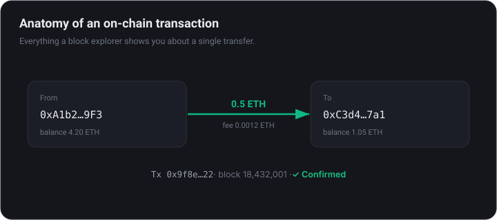
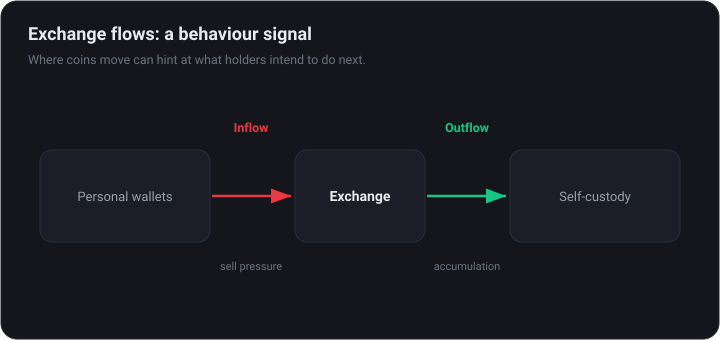

On-Chain Analysis 101
Crypto's superpower is a public ledger. Learn to read it — block explorers, the core metrics, how to follow smart money, and how to build your own dashboards.
What 'on-chain' means and why it matters
Every transaction on a public blockchain is visible to anyone, forever. On-chain analysis turns that raw ledger into insight: who is moving money, where, and how that has lined up with past tops and bottoms.
This is an edge traditional markets simply do not have — you can watch holders accumulate, exchanges fill or empty, and 'smart money' rotate, all in near real time. It complements price (TA) and fundamentals (FA) with a third lens: behavior.
Reading a block explorer
A block explorer is the on-chain equivalent of a search engine. Paste in a transaction hash, wallet address, or contract and you can see exactly what happened:
- Transactions — amount, sender, receiver, fee, and confirmation status.
- Addresses — balances and the full history of any wallet.
- Contracts & tokens — the code and token holders behind a project.
- Gas — the current cost to transact on the network.

The core metrics
A handful of metrics do most of the heavy lifting. Learn what they mean before chasing exotic ones:
- Active addresses — network usage and demand.
- Exchange in/outflows — coins moving to exchanges can signal intent to sell; coins moving off often signal accumulation into self-custody.
- Supply held by long-term holders — conviction; rising during fear is historically bullish.
- MVRV / SOPR — whether the average holder is in profit or loss, useful for spotting froth or capitulation.

These platforms package the raw data into charts and alerts so you do not have to compute it yourself.
Network health: miners, validators & security
A blockchain is only as valuable as it is secure, and on-chain data lets you watch that security directly. The groups that produce blocks — miners on proof-of-work chains like Bitcoin, validators (stakers) on proof-of-stake chains like Ethereum — leave clear footprints.
- Hash rate (proof-of-work) — the total computing power securing the network. A steadily rising hash rate signals miner confidence and a more attack-resistant chain.
- Staked supply (proof-of-stake) — how many coins are locked up to secure the network. More staked means more committed capital and less liquid supply available to sell.
- Miner reserves & flows — miners must sell some coins to cover costs; large miner transfers to exchanges can add selling pressure.
- Validator queue & rewards — on staking chains, the entry and exit queue and the yield reveal how eager capital is to help secure the network.
These metrics rarely call a top or bottom on their own, but they tell you whether the foundation under an asset is strengthening or quietly eroding — context price alone never shows.
Valuation & profitability: MVRV, SOPR & NUPL
On-chain data lets you estimate something traditional markets cannot see directly: whether the average holder is sitting in profit or loss. That single idea powers the most useful cycle indicators in crypto.
- Realised cap — values every coin at the price it last moved rather than today's price, approximating the market's aggregate cost basis.
- MVRV — market cap divided by realised cap. High readings mean holders are deep in profit (historically near tops); low readings mean widespread paper losses (historically near bottoms).
- SOPR — the spent-output profit ratio: whether coins moving on-chain are sold at a profit or a loss. Sustained sub-1 readings show capitulation.
- NUPL — net unrealised profit/loss: the share of supply in profit, often split into emotional zones from capitulation to euphoria.
None of these is a timing tool on its own. They describe conditions — how stretched or washed-out the market is — which is exactly the context price charts cannot give you.
These metrics rest on heuristics about which coins are "really" held by investors. Exchange and custodial wallets distort them, so read trends and extremes, not precise levels.
Holder cohorts: who is actually holding
Not every coin is held by the same kind of owner. On-chain data can group supply by how long it has sat still, separating patient conviction from fast money — a distinction that often leads price.
- Long-term holders (LTH) — coins that have not moved in months. Rising long-term-holder supply during fear is historically a constructive sign.
- Short-term holders (STH) — recently moved coins, typically more reactive and quicker to sell into volatility.
- HODL waves & coin age — visualise what share of supply is old versus young, exposing accumulation and distribution phases.
- Realised profit/loss by cohort — reveals who is selling: long-term holders taking profit looks very different from new buyers capitulating.
The recurring pattern across cycles: long-term holders accumulate while prices are low and disliked, then distribute into strength as newcomers pile in. Watching that handoff is more useful than watching price alone.
Behaviour leads price. When strong hands quietly accumulate into weakness, it rarely shows on the chart until later — which is the whole point of looking on-chain.
Follow the smart money
Not all wallets are equal. Wallet labeling tags addresses — exchanges, funds, known profitable traders — so you can follow the players who tend to be early.
- Track 'smart money' flows into and out of tokens.
- Entity behavior — when a fund or whale accumulates or distributes.
- Spot fresh deployments and insider wallets before the crowd.
Labels are probabilistic, not gospel. A single whale wallet can mislead — look for confluence across many addresses.
Stablecoins: the market's dry powder
Stablecoins are dollars living on a blockchain, and their behaviour is one of the most underrated on-chain signals. Tracking how many exist and where they sit hints at buying power waiting on the sidelines.
- Aggregate supply — a growing stablecoin supply means more capital has entered crypto and could rotate into assets; a shrinking supply means money is leaving.
- Exchange stablecoin reserves — stablecoins flowing onto exchanges often precede buying, the mirror image of coins leaving for self-custody.
- Stablecoin Supply Ratio (SSR) — compares Bitcoin's market cap to stablecoin supply; a low SSR means stablecoins have plenty of relative buying power.
- Peg health — a stablecoin drifting from $1 can signal stress in the issuer or the broader market.
Think of stablecoins as the market dry powder. When the supply is large and growing, there is fuel for a rally; when it is contracting, rallies tend to run out of buyers.
No single metric is decisive. Stablecoin flows are most powerful as confirmation — lining up with price, holder behaviour and exchange flows rather than replacing them.
Derivatives: funding, open interest & liquidations
Spot on-chain data shows ownership; the derivatives market shows leverage and positioning. Combining the two explains many violent moves that price alone cannot.
- Funding rate — the periodic payment between longs and shorts on perpetual futures. Persistently high positive funding means crowded longs paying to stay in — fuel for a long squeeze.
- Open interest (OI) — the total value of open futures contracts. Rising OI into a move shows conviction; a sharp drop signals positions closing or being liquidated.
- Long/short ratio — how positioning is skewed; extremes often precede reversals as the crowded side gets flushed.
- Liquidations — forced closures of leveraged positions. Cascades of them cause the wicks and flash moves that trap newcomers.
The classic setup: an overheated funding rate and stretched open interest, then a sharp move that liquidates the crowded side. Leverage data tells you where the fuel is; on-chain tells you what the patient money is doing.
Derivatives data moves fast and is easy to over-trade on. Use it to gauge risk and crowding, not as a constant buy or sell trigger.
Protocol & DeFi fundamentals
For tokens tied to apps (DeFi, L2s), on-chain data doubles as fundamentals. Instead of guessing, you can measure real usage and money:
- TVL (total value locked) — capital deposited in a protocol; a rough gauge of trust and traction.
- Fees & revenue — what the protocol actually earns, the crypto version of an income statement.
- Comparisons — stack protocols and chains side by side to see who is really used.
An on-chain workflow: building a thesis
Individual metrics are interesting; a process that combines them is what turns on-chain data into decisions. The goal is confluence — several independent signals pointing the same way.
- Start with valuation context — is the market historically cheap or stretched (MVRV, NUPL)?
- Check holder behaviour — are long-term holders accumulating or distributing?
- Read exchange flows — are coins leaving exchanges for custody, or arriving to be sold?
- Add stablecoin dry powder — is buying capacity entering or leaving the system?
- Overlay derivatives — is positioning crowded and primed for a squeeze?
- Only then look at price to time the idea.
When most of these agree, you have a thesis with real weight. When they conflict, that is information too — it usually means wait.
On-chain is a lens for probabilities and context, not certainty. Its power is confirming or challenging a view you formed elsewhere — never blindly following one chart.
Spotting scams & rug pulls on-chain
The same transparency that helps you analyse healthy projects also exposes unhealthy ones — if you know what to look for. Most rug pulls and scam tokens leave obvious on-chain fingerprints well before they collapse.
- Concentrated holders — if a handful of wallets own most of the supply, they can dump on everyone else. Check the holder distribution first.
- Liquidity that is not locked — if the team can withdraw the trading liquidity at any time, they can pull it and leave holders unable to sell.
- Dangerous contract functions — code that lets the creator mint unlimited new tokens or freeze transfers is a major red flag.
- Fresh wallets and wash trading — volume manufactured between a few new addresses to fake demand.
A few minutes on a block explorer — reading the holder list and the contract — filters out a large share of obvious scams before you ever risk a cent.
If you cannot understand how a token works or who controls it, that is your answer. The best scam defence is the willingness to walk away.
Build your own — and the caveats
Once you know what to look for, you can build custom views with SQL or browse thousands the community has already made — no coding required to start.
On-chain data is powerful but easy to misread. Keep these in mind:
- Exchange & custodial wallets distort 'holder' metrics — much supply is not really individual holders.
- Wrapped/bridged assets can double-count or hide flows across chains.
- Correlation is not causation — a metric that 'called' the last top may not call the next one.
Educational content, not financial advice. On-chain is one lens among several — combine it with price and fundamentals.